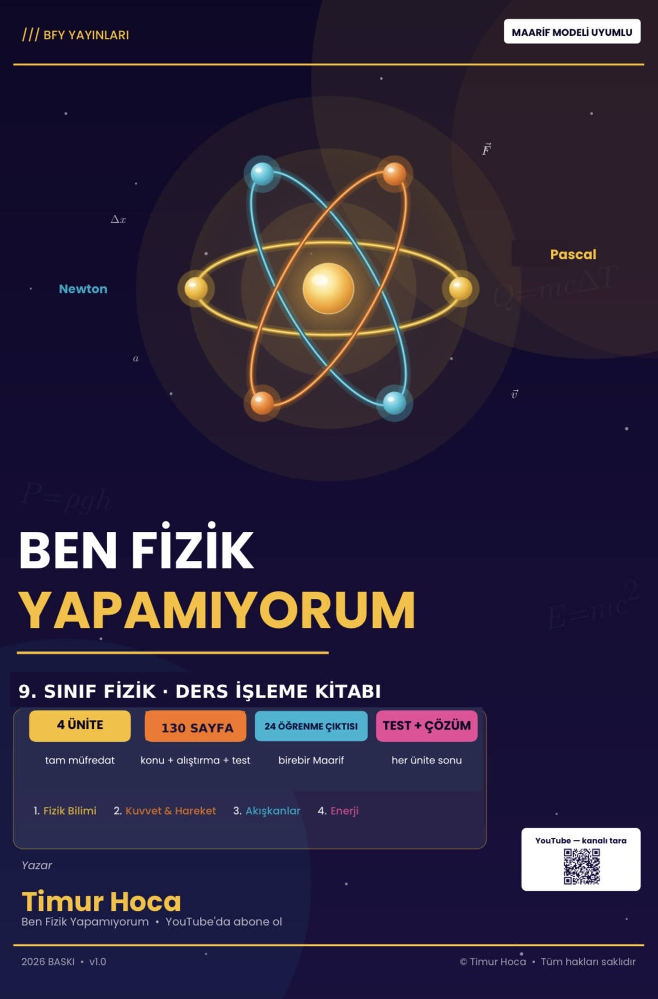

9 · 10 · 11. SINIF / YAZILI HAZIRLIK
Yazılıya 3 Gün Kala
₺299Tek sınıf · 1. + 2. yazılı paketi
İçeriği incele →Yazılıya ne çalışacağını düşünme. Üç günlük plan, çözümlü örnekler ve yazılı provaları hazır.
PDF + çözümlü web · Tek yazılı ₺199
Timur YILDIRIM · Fizik kaynakları
Yazılıya hazırlan, konuyu öğren veya dersini planla.
Sana uygun paketi buradan seç.
9 · 10 · 11. SINIF / YAZILI HAZIRLIK
Yazılıya ne çalışacağını düşünme. Üç günlük plan, çözümlü örnekler ve yazılı provaları hazır.
PDF + çözümlü web · Tek yazılı ₺199
9 · 10 · 11. SINIF / YIL BOYU ÇALIŞMA
Konuyu öğren, soruları adım adım çöz. Kavram kartları, mini oyunlar ve yazdırılabilir kitapçıklar.
Konu notları · Açıklamalı sorular · Yazdırılabilir
12. SINIF / MEZUN · 2018 PROGRAMI
2027’de sınava girecek 12. sınıflar ve mezunlar için. Konu anlatımı, denemeler ve simülasyonlar.
40 deneme · 29 simülasyon · 1234 soru

BASILI KİTAPLİSEYE YENİ BAŞLAYANLAR İÇİN · 9. SINIF
Yeni Maarif Modeli’ne uygun konu anlatımı ve sorular, elinde tutacağın bir kitapta. Oku, üzerine not al, yazarak çalış. Timur YILDIRIM’ın 9. Sınıf Fizik Ders Kitabı ile ilk yıldan sağlam ilerle.
HANGİSİ BANA UYGUN?
KEŞFETMEK ÜCRETSİZ
Simülasyonlar, testler ve sınıf oyunları.
Buradaki kaynaklar herkes için açık.
Değişkenleri değiştir.
Fiziği çalışırken gör.
Soruları çöz, sonucunu gör.
Eksiklerini fark et.
Sınıfça yarış.
Öğrenmeyi oyuna dönüştür.
Anlatım, örnekler ve videolar.
Sınıfına göre ilerle.
KARAR VERİRKEN YALNIZ DEĞİLSİN
Sınıfını ve neye ihtiyacın olduğunu yaz.
Timur YILDIRIM’a WhatsApp’tan ulaş.
Yazılıya 3 Gün Kala ve Yapabilirim’in öğrenci lisansları bireysel çalışma içindir. Hoca Kitleri, interaktif sınav paketleri ve Yapabilirim öğretmen lisansları derste kullanıma yöneliktir. Vitrinin üzerindeki seçiciyle sana uygun olanları görebilirsin.
Dijital ürünlere ürün sayfasında belirtilen bağlantı veya dosyalarla erişirsin. Yalnızca “Basılı kitap” etiketi olan ürün kargoyla gönderilir. PDF ürünleri çıktı alarak da kullanabilirsin.
Evet. Yapabilirim’in ürün sayfalarında ücretsiz deneme bağlantısı; Hoca Kitlerinde her sınıf için iki haftalık örnek var. Örnek bulunan diğer ürünlerin kartlarında da bağlantısını görebilirsin.
Hayır. 2027’de sınava girecek 12. sınıf ve mezun öğrenciler için YKS 2027 TYT, 2018 programını temel alır. TYT Maarif ise Maarif müfredatıyla okuyan öğrenciler içindir. Seçimini kendi programına göre yap.
Önce Shopier sipariş ve dijital teslimat e-postasını kontrol et. Erişim sorunu yaşıyorsan sipariş numaranla WhatsApp üzerinden ulaş; birlikte kontrol edelim.